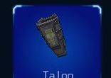
The Talon is a scout class frame that provides a basic platform for new mercenaries. It is inexpensive to build and operate. While the weapon options and defensive capabilities are limited, the Talon frame is the fastest platform and most maneuverable. While its design possibilities are limited, it can be optimized effectively for particular advantages.
Capacity: 14
Assembly: 200
Agility: 92
Armor: 90
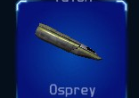
The Osprey frame is a revised version of the Talon and provides more assembly resources with a minimal reduction in performance and maneuverability. It also includes substantially more armor and is a more flexible platform from a design options standpoint.
Capacity: 15
Assembly: 225
Agility: 85
Armor: 110
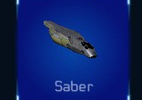
The Saber is a fighter class frame, although it is also used as a scout by many mercenaries. Its reinforced armor and efficient power system provide a high level of protection for such a small frame.
Like the Falcon, the Saber frame is considered to be the best choice for light and medium combat duties by most mercenaries and is very affordable.
Capacity: 18
Assembly: 250
Agility: 77
Armor: 130
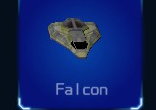
The Falcon frame is a more recent design. With a larger size, it offers more assembly resources and armor at a similar level of performance. Named after the
Alliance combat spacecraft that fought in the last
Alliance-Federation war, the new Falcon provides a solid platform for mercenaries looking for a capable combat frame with amazing performance and maneuverability.
Capacity: 22
Assembly: 300
Agility: 70
Armor: 140
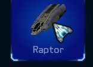
The Raptor frame is a unique compact design that uses blended metallic composites for effective sub-frame protection and advanced technology to keep its overall size small compared to other frames. Its narrow shape and powerful energy system allow it to have a high level of assembly resources and support for energy hungry shield systems. An excellent multi-role frame.
Capacity: 24
Assembly: 350
Agility: 62
Armor: 180
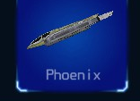
The Phoenix class frame is a revised version of the
Raptor, offering a wider, but shorter structure with more assembly resources and armor. These improvements are available with a minimal reduction in agility.
Most mercenaries who prefer the advantages of the Raptor frame choose the Phoenix as the best version.
Capacity: 28
Assembly: 400
Agility: 55
Armor: 190
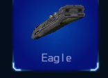
Designed to survive intense large scale battles and protect valuable cargo from even the most powerful adversaries, the Eagle class frame boasts a triple layer metallic composite sub-frame and many assembly resources for high end components. Its main drawback is limited agility and speed, but it is ideal for mercenaries who require high end offensive and defensive capabilities.
Capacity: 32
Assembly: 450
Agility: 47
Armor: 210
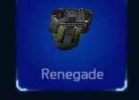
The Renegade class frame was built as a combat oriented upgrade to the Eagle frame. It sacrifices some agility for a larger size with 25 more assembly resource points and another layer of armor. Additional design capacity also adds to the overall configuration potential of the frame while an efficient engine management system helps keep its base speed level close the Eagle's performance.
Capacity: 34
Assembly: 475
Agility: 40
Armor: 225
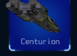
Considered the battleship among mercenaries, the
Centurion frame commands attention and respect. Only wealthy mercenaries can afford to buy and operate this ship, but the reward is a commanding lead over other frames in most combat situations. It can be designed to also be an effective transport, offering a level of cargo safety far above what other ships are capable of.
Capacity: -------------------- 44
Assembly: ------------------------- 500
Agility: ------- 32
Armor: --------------- 250
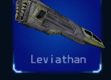
Several private mercenary groups pooled their resources together to develop the Leviathan class frame as an answer to the Centurion which had dominated much of Evochron for a long time. The Leviathan offers an unequalled level of armor. It usually takes a skilled group of pilots to defeat one of these ships.
Capacity: 48
Assembly: 500
Agility: 25
Armor: 300
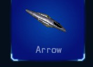
One of the first Federation frames made available to mercenaries operating in Alliance space, the Arrow frame offers remarkable agility. While not quite as fast as the Alliance built Pulsar, its powerful thruster system gives it a maneuverability level that's over 20% higher.
Capacity: 14
Assembly: 225
Agility: 92
Armor: 85
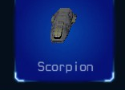
The Scorpion offers a robust platform for a light frame.
With a higher design capacity than most other light frames coupled with agility that matches the Arrow, it is a very capable platform for light transport and combat duties. This frame is also popular for racing.
Capacity: 15
Assembly: 225
Agility: 85
Armor: 105
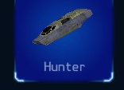
The Hunter is a durable design offering high speed and moderate assembly capacity. It's not quite as agile as the lighter Federation frames, but can hold its own against the Alliance Pulsar and Saber frames. With its higher design capacity and high speed for its size, this frame is a popular choice for mercenaries who trade in moderate to hostile space.
Capacity: 18
Assembly: 275
Agility: 77
Armor: 125
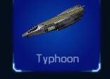
The Typhoon frame is a very capable medium combat platform. Complementing its thick sub-frame is a high power shield core similar to the design used on the military's Razor fighter. It's not quite as fast as the comparable Alliance Falcon frame, but it has an edge in agility and design capacity. This frame is a popular choice among skilled combat pilots.
Capacity: 22
Assembly: 325
Agility: 70
Armor: 145
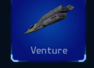
The Venture was designed for moderate transport duties. It has a relatively high assembly capacity for its size along with a multi-coil shield core.
While its additional bulk does limit its velocity and acceleration, powerful maneuvering thrusters help it match the agility of the lighter Typhoon frame, even with its heavier hull armor.
Capacity: 24
Assembly: 375
Agility: 62
Armor: 170
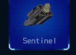
Named after the defensive combat role it was built for, the Sentinel is often used in escort and support duties. It has earned a reputation of being able to take a hit. With its moderate assembly and design capacities, it can also be made into a formidable offensive combat spacecraft. Mercenaries often devote its available resources to weapons and shields.
Capacity: 28
Assembly: 425
Agility: 55
Armor: 185
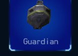
The Guardian is based on the Sentinel's design, but adds significantly more armor, design capacity, and shielding. Its ability to carry a much higher payload comes at a price, its speed and agility are significantly less than the lighter Sentinel.
However, many pilots consider its additional protection well worth the price.
Capacity: 32
Assembly: 500
Agility: 47
Armor: 200
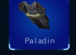
The Paladin frame is designed to provide a high cargo and weapon capacity in one of the fastest and most agile heavy designs. It features much better agility compared to a similarly configured
Renegade frame along with a slight speed and acceleration advantage. Because of its agility, this frame is often used in heavy combat roles.
Capacity: -------------------- 34
Assembly: -------------------- 500
Agility: -------------------- 40
Armor: -------------------- 220
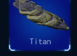
Designed to be a heavy transport, the Titan offers enough design capacity to carry many of the most advanced equipment upgrades at the same time.
While it's slightly slower than a comparable
Centurion, it is significantly more maneuverable.
This ship is often the preferred choice for surviving in hostile space.
Capacity: 44
Assembly: 500
Agility: 32
Armor: 240
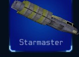
Little is known about this frame. It is a modified version of the Titan carrying significantly more weight, but it also has a stronger sub-frame and higher design capacity.
Capacity: 48
Assembly: 500
Agility: 25
Armor: 280